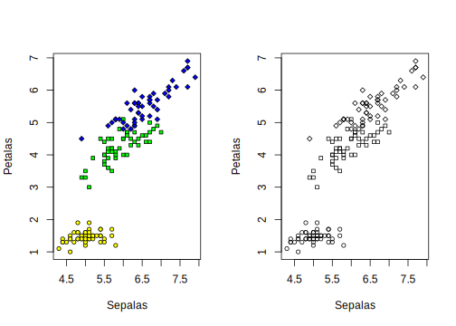
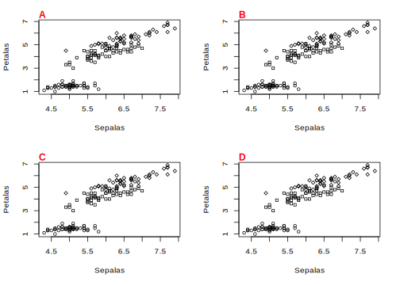

5.2 Parâmetros gráficos, parte I - Margem, fonte, proporções
Para fazer boas figuras no R, você precisa muitas vezes controlar parâmetros gráficos dos dispositivos, como margem da figura, tamanho de fonte, tipo da fonte, distância das legendas dos eixos x e y, se essas legendas são horizontais ou verticais, o tipo símbolos dos pontos, as cores dos simbolos etc.
Você pode definir esses parâmetros diretamente nas funções gráficas de alto-nível highlevel plot> (..., <tag> = <value>), onde um valor (value) de um parâmetro (tag) pode ser adicionado diretamente como argumento de uma função de alto-nível.
Alguns desses parâmetros, no entanto, só podem ser definidos através da função par(), que também define parâmetros gráficos globais, isto é, se você alterar os parâmetros através dessa função, isso será alterado para todos os gráficos que forem abertos posteriormente durante a mesma sessão do R.
Esta mesma função também permite visualizar os parâmetros gráficos.
Leia atentamente o ? da função par().
Você pode salvar os parâmetros globais antes de alterá-los.
?par # veja o help dessa função# você pode ver os parâmetros padrão:
par() # vejo todos os parâmetros## $xlog
## [1] FALSE
##
## $ylog
## [1] FALSE
##
## $adj
## [1] 0.5
##
## $ann
## [1] TRUE
##
## $ask
## [1] FALSE
##
## $bg
## [1] "transparent"
##
## $bty
## [1] "o"
##
## $cex
## [1] 1
##
## $cex.axis
## [1] 1
##
## $cex.lab
## [1] 1
##
## $cex.main
## [1] 1.2
##
## $cex.sub
## [1] 1
##
## $cin
## [1] 0.15 0.20
##
## $col
## [1] "black"
##
## $col.axis
## [1] "black"
##
## $col.lab
## [1] "black"
##
## $col.main
## [1] "black"
##
## $col.sub
## [1] "black"
##
## $cra
## [1] 10.8 14.4
##
## $crt
## [1] 0
##
## $csi
## [1] 0.2
##
## $cxy
## [1] 0.02604167 0.06329114
##
## $din
## [1] 7 5
##
## $err
## [1] 0
##
## $family
## [1] ""
##
## $fg
## [1] "black"
##
## $fig
## [1] 0 1 0 1
##
## $fin
## [1] 7 5
##
## $font
## [1] 1
##
## $font.axis
## [1] 1
##
## $font.lab
## [1] 1
##
## $font.main
## [1] 2
##
## $font.sub
## [1] 1
##
## $lab
## [1] 5 5 7
##
## $las
## [1] 0
##
## $lend
## [1] "round"
##
## $lheight
## [1] 1
##
## $ljoin
## [1] "round"
##
## $lmitre
## [1] 10
##
## $lty
## [1] "solid"
##
## $lwd
## [1] 1
##
## $mai
## [1] 1.02 0.82 0.82 0.42
##
## $mar
## [1] 5.1 4.1 4.1 2.1
##
## $mex
## [1] 1
##
## $mfcol
## [1] 1 1
##
## $mfg
## [1] 1 1 1 1
##
## $mfrow
## [1] 1 1
##
## $mgp
## [1] 3 1 0
##
## $mkh
## [1] 0.001
##
## $new
## [1] FALSE
##
## $oma
## [1] 0 0 0 0
##
## $omd
## [1] 0 1 0 1
##
## $omi
## [1] 0 0 0 0
##
## $page
## [1] TRUE
##
## $pch
## [1] 1
##
## $pin
## [1] 5.76 3.16
##
## $plt
## [1] 0.1171429 0.9400000 0.2040000 0.8360000
##
## $ps
## [1] 12
##
## $pty
## [1] "m"
##
## $smo
## [1] 1
##
## $srt
## [1] 0
##
## $tck
## [1] NA
##
## $tcl
## [1] -0.5
##
## $usr
## [1] 0 1 0 1
##
## $xaxp
## [1] 0 1 5
##
## $xaxs
## [1] "r"
##
## $xaxt
## [1] "s"
##
## $xpd
## [1] FALSE
##
## $yaxp
## [1] 0 1 5
##
## $yaxs
## [1] "r"
##
## $yaxt
## [1] "s"
##
## $ylbias
## [1] 0.2op <- par() # pego todos os parâmetros
class(op) # isso é uma lista## [1] "list"names(op) # esses são os nomes dos parâmetros## [1] "xlog" "ylog" "adj" "ann" "ask" "bg"
## [7] "bty" "cex" "cex.axis" "cex.lab" "cex.main" "cex.sub"
## [13] "cin" "col" "col.axis" "col.lab" "col.main" "col.sub"
## [19] "cra" "crt" "csi" "cxy" "din" "err"
## [25] "family" "fg" "fig" "fin" "font" "font.axis"
## [31] "font.lab" "font.main" "font.sub" "lab" "las" "lend"
## [37] "lheight" "ljoin" "lmitre" "lty" "lwd" "mai"
## [43] "mar" "mex" "mfcol" "mfg" "mfrow" "mgp"
## [49] "mkh" "new" "oma" "omd" "omi" "page"
## [55] "pch" "pin" "plt" "ps" "pty" "smo"
## [61] "srt" "tck" "tcl" "usr" "xaxp" "xaxs"
## [67] "xaxt" "xpd" "yaxp" "yaxs" "yaxt" "ylbias"# a função par permite ver os valores atualmente definidos
par("family") # tipo de fonte nao tem## [1] ""par("mar") # margens da figura em número de linhas## [1] 5.1 4.1 4.1 2.1# a função para tem apenas 1 argumento além dos parâmetros gráficos
op2 <- par(no.readonly = TRUE)
class(op2)## [1] "list"# a diferença entre especificar no.readonly como verdadeiro (na primeria opção não especificada acima, o padrão é FALSE)
# é que a lista gerada pode ser usada para refazer alterações, ou seja, para resgatar os parâmetros gráficos padrão.
# ou seja, posso fazer:
par(op2) # para resgatar valores originais# mas não posso fazer o mesmo com a primeira opção
par(op) # porque op é uma lista diferentelength(op) == length(op2) # tem comprimentos diferentes## [1] FALSEidentical(op, op2) # nao são identicas## [1] FALSE5.2.1 Margem da figura
# Usando novamente o exemplo de iris
Sepalas <- iris$Sepal.Length
Petalas <- iris$Petal.Length
# especies como números
spp <- as.numeric(as.factor(iris$Species))
# uma cor para cada espécie
vcl <- c("yellow", "green", "blue")[spp]
# um simbolo para cada espécie
sbs <- c(21, 22, 23)[spp]
# plota a figura no dispositivo padrão
plot(Sepalas,
Petalas,
pch = sbs,
bg = vcl,
cex = 0.8
)
# ALTERANDO A MARGEM em NUMEROS DE LINHAS
# salva o valor padrao para resgatar ao final
op <- par(no.readonly = TRUE)
op$mar # esses são os valor atuais para Margem Inferior, Esquerda, Superior e Direita, respectivamente. #quando se referir a margem todos os parâmetros seguem a ordem ANTI-HORÁRIA iniciando na margem inferior## [1] 5.1 4.1 4.1 2.1# reduzindo as margem direita e superior em número de linhas
par(mar = c(5, 4, 1, 0.5))
plot(Sepalas,
Petalas,
pch = sbs,
bg = vcl,
cex = 0.8
)# voltando ao original
par(mar = op$mar)5.2.2 Aspecto dos eixos
op <- par(no.readonly = TRUE)
# POSICAO DAS LEGENDAS DOS EIXOS
par("mgp") # três valores que correspondem ao número de linhas para: (1) Titulo dos Eixos; (2) valores dos eixos; (3) linha dos eixos
# TAMANHO DE FONTE DOS EIXOS É RELATIVO AO VALOR DE FONTE PADRÃO
par("cex") # tamanho padrão
par("cex.lab") # número que multiplicado por op$cex indica o valor da fonte dos títulos dos eixos
par("cex.axis") # dos valores
# TAMANHO DAS BARRAS DE CADA VALOR
par("tck") # geralmente não tem padrão definido pois é extraído de outros valores automaticamente, mas você pode controlar isso
# DIMINUINDO A FONTE DISSO
par(cex.lab = 0.8, cex.axis = 0.7)
plot(Sepalas, Petalas, pch = sbs, bg = vcl, cex = 0.8)
# note que isso muda se eu alterar o tamanho de fonte padrão par(cex)
par(cex = 2, cex.lab = 0.8, cex.axis = 0.7)
plot(Sepalas, Petalas, pch = sbs, bg = vcl, cex = 0.8)
# APROXIMANDO
par(mgp = c(1.5, 0.5, 0))
plot(Sepalas, Petalas, pch = sbs, bg = vcl, cex = 0.8)
# e agora
par(tck = -0.01) # note o valor negativo
plot(Sepalas, Petalas, pch = sbs, bg = vcl, cex = 0.8)
par(tck = 0.01) # se colocar positivo
plot(Sepalas, Petalas, pch = sbs, bg = vcl, cex = 0.8)
par(op) # restaurando valores originais
plot(Sepalas, Petalas, pch = sbs, bg = vcl, cex = 0.8)5.2.3 Proporção dos eixos
op <- par(no.readonly = TRUE)
par("pty") # valor "m" maximiza a area disponível## [1] "m"plot(Sepalas, Petalas, pch = sbs, bg = vcl, cex = 0.8)
# agora mantendo a proporção dos eixos (sem esticar nenhum dos dois)
par(pty = "s")
plot(Sepalas, Petalas, pch = sbs, bg = vcl, cex = 0.8)
# se não notou diferença, expandir o dispositivo onde está desenhando a figura5.2.4 Múltiplas figuras na mesma tela ou página com mfrow() e mfcol()
Você pode colocar diferentes gráficos na mesma tela ou na mesma página de um pdf, por exemplo. Temos duas formas de fazer isso.
Os parâmetros mfrow e mfcol dividem os dispositivo em células de tamanhos idênticos.
Todas as figuras terão o mesmo tamanho.
A diferença entre os dois parâmetros é que mfrow() preenche o espaço por linhas, enquanto mfcol() preenche o espaço pelas colunas.
par(op)
par("mfrow") # o dispositivo não está divido: tem 1 linha e 1 coluna## [1] 1 1plot(Sepalas, Petalas, pch = sbs, bg = vcl, cex = 0.8)
# EXEMPLO 1
# duas figuras no mesmo dispositivo
par(mfrow = c(1, 2)) # dividir o dispositivo em 1 linha e duas colunas
# plota a primeira figura
plot(Sepalas, Petalas, pch = sbs, bg = vcl, cex = 0.8)
# plota a segunda sem cores
plot(Sepalas, Petalas, pch = sbs, bg = NULL, cex = 0.8)
# EXEMPLO 2
par(mar = c(5.1, 4.1, 2.1, 2.1))
par(mfrow = c(2, 2)) # dividir o dispositivo em 2 linha e duas colunas
# plota quatro figuras identificas
for (f in 1:4) {
plot(Sepalas, Petalas, pch = sbs, bg = NULL, cex = 0.8)
# adiciona uma letra para você ver a ordem e comparar com o exemplo 3
mtext(LETTERS[f], side = 3, line = 0, adj = 0, font = 2, col = "red") # esta é uma função de baixo nível que falaremos depois
}
# EXEMPLO 3
par(mfcol = c(2, 2)) # mesma coisa mas preenchendo por colunas (compare com a figura acima)
for (f in 1:4) {
plot(Sepalas, Petalas, pch = sbs, bg = NULL, cex = 0.8)
mtext(LETTERS[f], side = 3, line = 0, adj = 0, font = 2, col = "red")
}
# colocando exemplo 2 e 3 num pdf
pdf(file = "meuPDFmfrow.pdf", paper = "a4")
# EXEMPLO 2 expandido
par(mfrow = c(3, 2)) # tres linhas e duas colunas
for (f in 1:6) {
plot(Sepalas, Petalas, pch = sbs, bg = NULL, cex = 0.8)
mtext(LETTERS[f], side = 3, line = 0, adj = 0, font = 2, col = "red")
}
# EXEMPLO 3 expandido
par(mfcol = c(3, 2))
for (f in 1:6) {
plot(Sepalas, Petalas, pch = sbs, bg = NULL, cex = 0.8)
mtext(LETTERS[f], side = 3, line = 0, adj = 0, font = 2, col = "red")
}
dev.off()5.2.5 Múltiplas figuras na mesma image usando a função layout()
A função layout() também permite dividir um dispositivo para múltiplas figuras, mas de uma forma muito mais complexa.
?layout # veja o help dessa função
# voce precisa definir uma matriz que indica:
# 1) o numero de figuras (valores da matriz)
# 2) a posição das figuras (numero de linhas e colunas)
# por exemplo, suponha que queremos plotar 3 figuras:
# 1 preenchendo a largura da página e metade da altura
# 2 outras figuras preenchendo a outra metada da altura# neste caso a figura 1 ira ocupar dois espacos
mm <- matrix(c(1, 1, 2, 3), nrow = 2, ncol = 2, byrow = T)
mm # a figura 1 irá ocupar a posicao do numero 1 na matriz
# a figura 2 irá ocupar a posicao do numero 2 nessa matriz
# a figura 3 irá ocupar a posicao do numero 3 dessa matriz
# a largura de cada coluna e linha é especificada pelos argumentos widths e heights e usaremos a função lcm() para especificar isso em centímetros
# divide o dispositivo
ml <- layout(mm, widths = rep(lcm(5), ncol(mm)), heights = rep(lcm(5), nrow(mm)))
# mostra a divisao feita
layout.show(ml)
# plota a primeira figura
plot(Sepalas, Petalas, pch = sbs, bg = vcl, cex = 0.8)
# a segunda
plot(Sepalas, Petalas, pch = sbs, bg = vcl, cex = 0.8)
# a terceira
plot(Sepalas, Petalas, pch = sbs, bg = vcl, cex = 0.8)Podemos salvar essas figuras em um pdf:
pdf(file = "meuPDFlayout.pdf", paper = "letter")
layout(mm, widths = rep(lcm(8), ncol(mm)), heights = rep(lcm(8), nrow(mm)))
# plota as tres figuras fazendo uma iteracao
for (f in 1:3) {
plot(Sepalas, Petalas, pch = sbs, bg = NULL, cex = 0.8)
mtext(LETTERS[f], side = 3, line = 0, adj = 0, font = 2, col = "red")
}
dev.off() # fecha o pdf